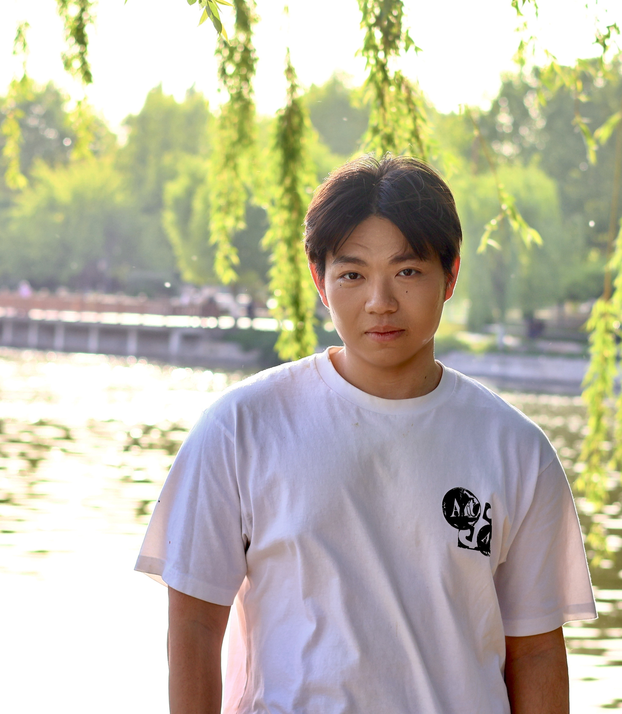

Personal Portfolio
For me, design is not only about making things look better, but about making people feel more understood, supported, and connected. My work explores how visual language, interaction, and service thinking can come together to respond to real-world challenges.

University of California, Davis
GPA: 3.6/4.0 | Major: Design
Contact
1292481930@qq.com